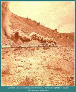
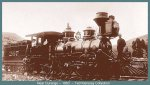
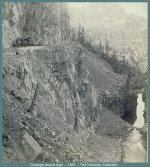
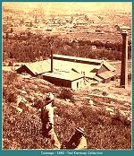

|
 |
Between Chama and Antonito
Rare action shot of double header east of Chama headed towards Durango 1882 (73k) |
|
 |
Near Durango
1883 (49k) |
|
 |
Durango bound train
1881 (92k) |
|
 |
Durango
1882 (180k) |